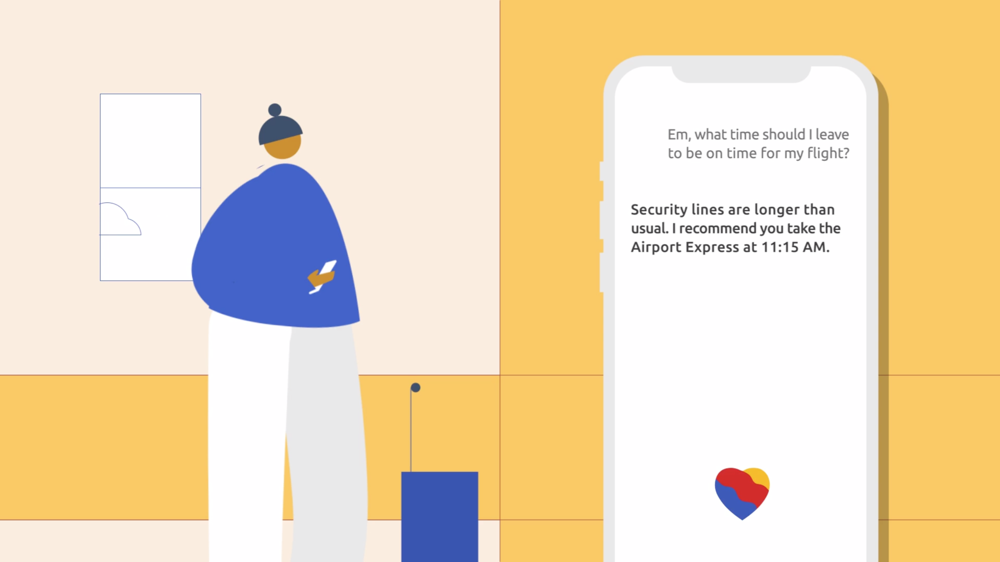

Em for Southwest
Skills
Conversation Design
Motion
Branding and Identity
Timeframe
Spring 2020
4 weeks
Collaborators
Jaclyn Saik
Jenni Lee
Hannah Cai
Role
Use Case Development
Illustration
Animation
A conversational user interface to support the flying experience.
As conversational agents are increasingly being integrated into digital products, the role of verbal and visual cues in CUIs cannot be understated. Such cues act as the bridge between system and user, creating a human facing persona that lends itself to communicating with and supporting users. We created Em,1 a CUI for Southwest Airlines, to reflect a brand that is marketed as 'people first' and aims to support passengers during every step of their journey.
Concept Video
Leaving home

Em provides users with a time estimate for when they should leave for the airport, taking into account real time data on traffic and security lines.
Boarding

Em utilizes geolocation data to inform users when they should get moving to be on time for boarding.
Mitigating flight anxiety

Upon detecting a fast heartbeat, Em checks in on users who might be experiencing flight anxiety and provides a series of quiet interventions to calm them down in flight.
Landing contact check-ins

Em texts the user's key contacts upon landing to let them know they have arrived at their destination safely.
Motion Exercises
To get us in the right headspace, we each animated a single circle to try our hand at reflecting various emotions and states through motion. We later animated these same states with our chosen brand in mind, and came together to compare and map how each animation conveyed a different emotion.
Use Cases
We began to investigate the user journey of catching a flight, from booking to landing. We mapped these points in the user's journey to potential places where a CUI could intervene.
With these preliminary assumptions in mind, we conducted usability interviews with Southwest passengers to determine the need for our proposed interventions, and the kinds of travellers who might benefit from them.
The Journey
With our assumptions validated and a deeper understanding of real user needs during a flight, we began to storyboard concept ideas and create our our script to translate our four primary scenarios into a cohesive storyline.
Southwest's Brand
During our initial interviews, several of our interviewees mentioned that Southwest feels like a friendly and trustworthy brand. Similarly, Southwest markets itself as a 'people first' brand that services it's customers with heart. With these insights in mind, we dug into Southwest's visual assets and rebrand by Lippincott ↗ , and began to think about how these abstract attributes could be conveyed visually.
Creating the CUI
While our initial CUI form explorations drew inspiration from shapes from aircrafts and Southwest's logo itself, we eventually settled on using Southwest's existing heart logo, a motif which many found to be inseperable from the brand. The heart morphs to fit the underlying tone of each state.
We eventually settled on final states: waking up, listening, speaking and meditation.
Visual Assets
To prepare for animation, we created a library of visual assets. We drew upon Southwest's primary brand colors and created visual assets inspired by Bauhaus design. Drawing upon the principles of the movement, simple shapes and lines were used as a foundation to create more complex assets in order to emphasize how a fundamentally strong service foundation is key to the service-customer relationship.